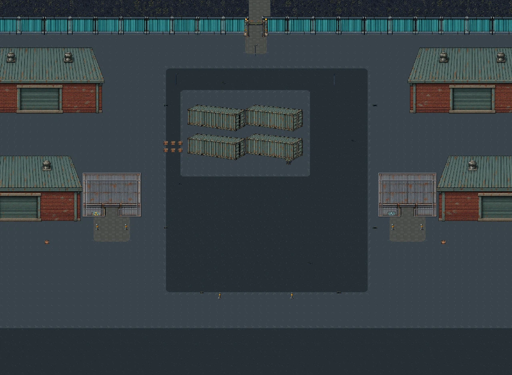
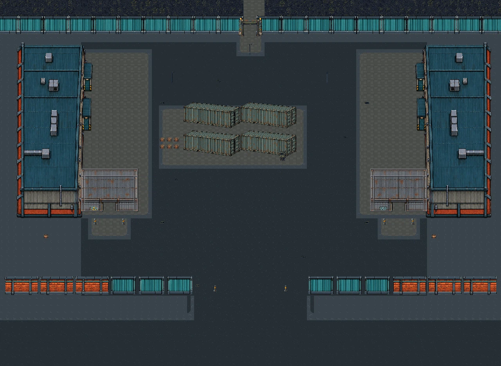
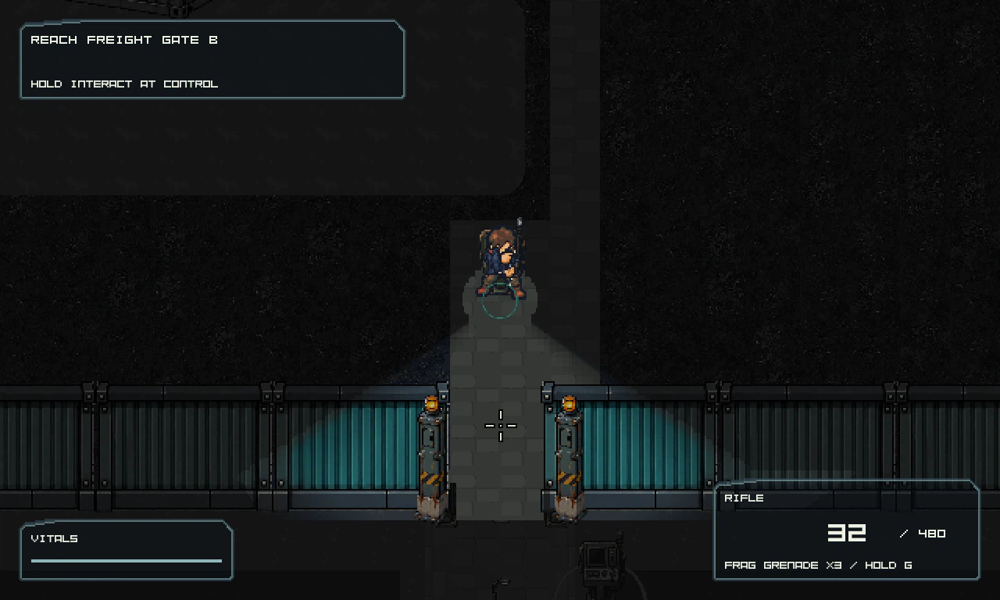
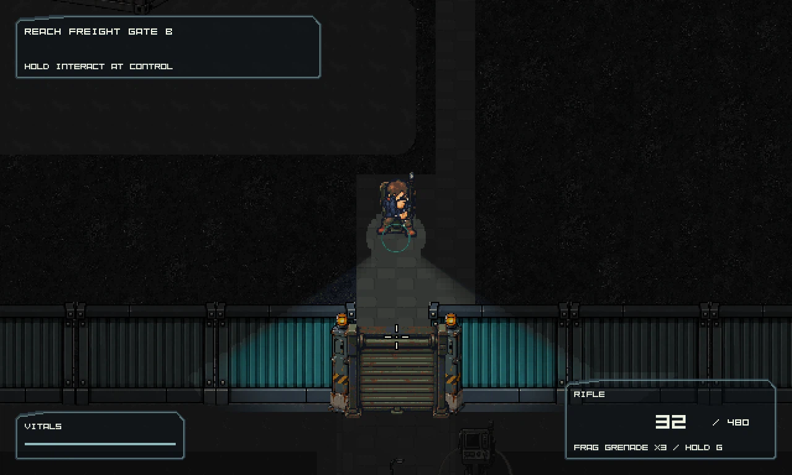
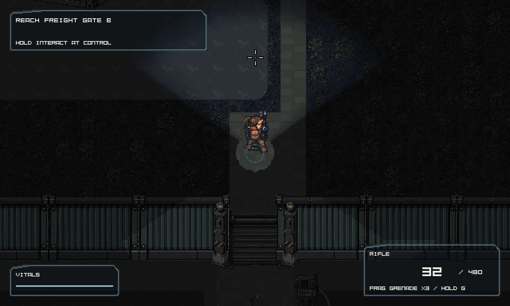
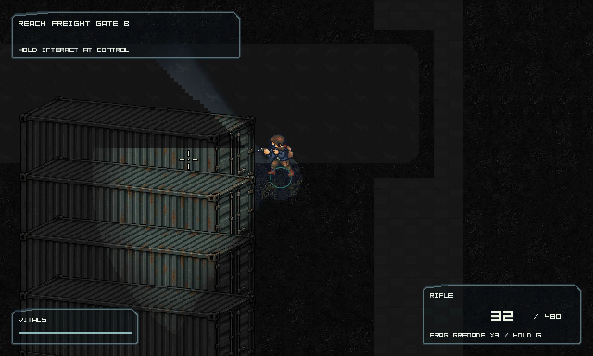

Current playable candidate and route
Connected frontage; visible escape barriers
Runtime slice, not full-level art or human-pacing acceptance. Old assets are preserved.
Court composition

Before: repeated detached warehouses and redundant ground frame. Visually rejected. 
After: connected wings, attached utility rooms, quiet circulation and a south entry. Further art review remains open.
Closed Gate A after the route advances to Gate B

Historical renderer; same current map and probe state. 
Corrected observer-facing surface sampling. State, close event and retained blocker are asserted by the probe.
Remembered gate and visible north obstacle

Turn away after looking at the closed gate. Direct visibility is tested separately from remembered artwork. 
Existing cargo art now represents the solid lane partition. North layout polish is still provisional.
Evidence Historical-renderer probe · Corrected-renderer probe · Probe source/binary receipt · Scoped review
Probe pressure is disabled to isolate visibility; both selected encounter smokes retain authored pressure. A probe result cannot establish human playtest acceptance.